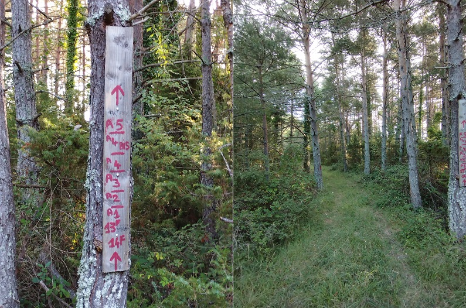
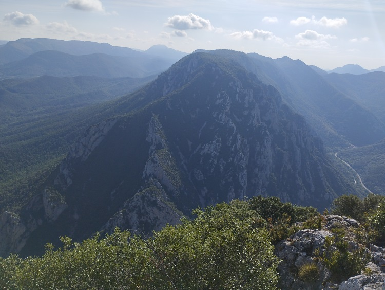
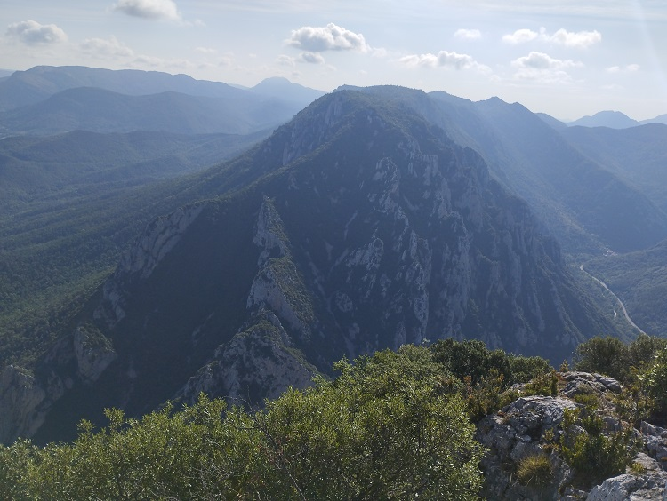

Cette boucle emprunte sur une grande longueur l'ancien chemin Quirbajou - Quillan. Est ce chemin que les habitants de Saint Martin Lys empruntaient avant le percement de la Pierre Lys ?
Départ depuis Quirbajou, en passant le long de l'église St Loup
Embranchement dans la forêt - les postes de chasse le long du chemin
Quelques arbres particuliers au bord de ce chemin - le pin fourchu, les repousses, les jumeaux
Le premier point de vue sur le col de Gages
L'embranchement suivant - au choix suite de la boucle en prenant vers Nabines / ancien relais télévison de Belvianes = vue
Vue plus précise du col de Gages
Gouffre ouvert sur le vide de la falaise au vautour
Trouée souffante - au fond le jour du vide
Vue directe vers le trou du curé à l'entrée "Belvianes" de la Pierre-Lys
Vues diverses depuis les différents points de vue du belvédère "ancien Relais Télé de Belvianes"
La vue va de Quillan à Saint Martin Lys en passant par Belvianes qu'on peut voir plusieurs fois sur différents plans (le belvédère s'étend sur une 50 ène de mètres) et zoom. Les brunes de chaleur coincés dans la vallée n'ont pas permis des photos de qualité - il faudra que j'y revienne une autre saison... (et mieux équipé ?).
Je vous laisse chercher St Férriol, St Louis et Parahou, Rennes le Chateau... qu'on aperçoit sur certaines photos.
(les photos sont rangées dans le sens de la progression ouest/est sur le Belvédère à partir du gouffre, puis du relais et enfin de la vue vers Saint-Martin-Lys)
 


Mieux équipée Amédine a pu faire de belles photos que je vous laisse voir sur faceboock ou sur son site - page à venir
Je ne peux m'empécher de publier ses 2 photos que je ne pouvais pas prendre
Reprenons le chemin de Nabiles - Cables d'exploitation forestière ou minière ? (à étudier plus précisément) prés de la cabane des chasseurs (autre point de vue sur la vallée - non photographié à ce jour)
Gouffre ou aven protégé par un grillage sur le plateau karstique de Quirbajou
Chemin Quirbajou - Quillan, ce chemin mériterait surement d'être balisé, vue directe sur le village de Quirbajou et la vallée du Rébenty
Randonnée du 16 août 2025 avec Amédine
A la recherche du chemin ayant précédé la route de la Pierre-Lys
En se basant sur le cadastre de 1828 qui montre un chemin déscendant sur le Gourg Bouillidou
Première vue depuis le dessus du tunnel routier - voir l'Aude et le chateau d'entrée du tunnel ferrovière de la Pierre-lys
L'ancien chemin de la pierre-lys ?
Abris sous roche le long de la première barrière rocheuse
premier des grands murs supportant le chemin (il y en a 3 - chacun de plus de 5 mètres de hauteur)
(suite à venir)